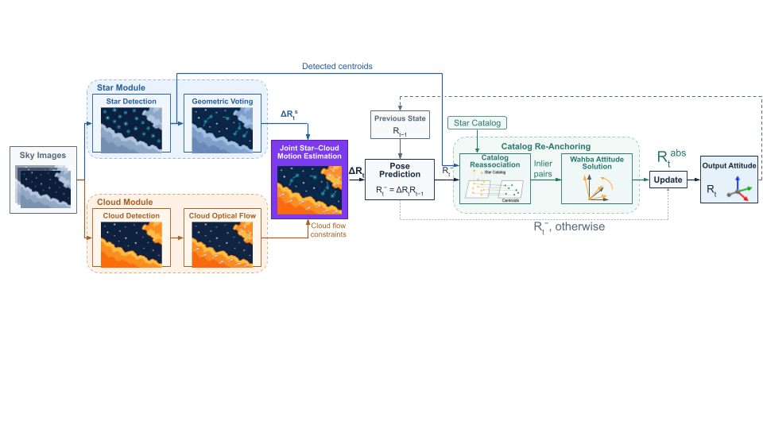

Joint Star–Cloud Compass under the Terrestrial Night Sky
IEEE International Conference on Robotics and Automation (ICRA) 2027 submission
We present AstroCirrus, a continuous attitude estimation method for ground-based environments with clouds and dynamic camera rotation. Existing star-based attitude estimation methods require sufficient star observations and reliable catalog matching. Because most existing methods rely on star observations, tracking may become unstable or fail when clouds reduce the number of visible stars.
Our method addresses these issues by combining star observations with cloud optical flow for robust relative attitude estimation under degraded star visibility. Rather than treating clouds as a fixed celestial background, we model the clouds' own motion separately from the motion caused by camera rotation. We achieve this with a 5-DoF estimator that jointly estimates 3-DoF camera rotation and 2-D cloud motion, allowing cloud observations to support tracking when only a few stars are visible. We use the estimated relative rotations to propagate the attitude continuously, then re-anchor the propagated estimate to the catalog to recover the absolute attitude.
We evaluate the proposed method using real night-sky scenes captured under clear and cloudy conditions and various angular motion conditions. The proposed method achieves robust and continuous attitude estimation under sparse star observations by leveraging cloud optical flow.
A 5-DoF joint estimator uses both star and cloud observations, recovering 3-DoF camera rotation and 2-D intrinsic cloud motion together, which improves relative tracking under degraded star visibility.
Frame-to-frame relative rotations keep the attitude state alive through temporary failures of absolute updates, and catalog re-anchoring restores the absolute celestial reference whenever enough stars return.
The full system and its main components are evaluated on real night-sky imagery under clear and cloudy conditions, across constant-rate sweeps and a rover-like multi-axis rotation profile.
When clouds hide the stars, existing methods (stars only) lose their attitude, while AstroCirrus keeps tracking with cloud motion.
Illustration only: a simplified re-creation of the idea on a synthetic sky, not the AstroCirrus implementation.

The star module detects star centroids and estimates frame-to-frame rotation through geometric voting, while the cloud module tracks cloud features and maintains a temporal prior of their intrinsic motion. The joint star–cloud estimator combines star correspondences, cloud flow, and the cloud-motion prior to estimate a 5-DoF relative-motion state consisting of the camera rotation and intrinsic cloud motion. The estimated relative rotation propagates the previous attitude and predicts the visible catalog stars. Finally, catalog re-association followed by Wahba’s solution re-anchors the propagated state to the absolute celestial reference when sufficient matches are available.
Table I. Four multi-pose sequences per condition, 200 frames each, average angular rate 4.4°/s. The cloudy subset has an average cloud-texture coverage of 45.7%.
| Method | Clear (4-seq avg.) | Cloudy (4-seq avg.) | ||
|---|---|---|---|---|
| A1° [%] ↑ | RMSE [°] ↓ | A1° [%] ↑ | RMSE [°] ↓ | |
| Li et al. | 98.6 | 0.093 | 56.2 | 0.081 |
| Rawashdeh et al. | 99.9 | 6.346 | 67.7 | 76.989 |
| TETRA | 54.9 | 0.083 | 49.3 | 0.071 |
| Astrometry.net | 18.9 | 0.140 | 16.6 | 0.234 |
| ROSIA | 22.5 | 0.097 | 17.2 | 12.273 |
| AstroCirrusOurs | 100.0 | 0.090 | 99.9 | 0.181 |
Li et al. and TETRA report lower RMSE under cloud, but over far fewer frames. AstroCirrus keeps usable attitude on almost every frame while holding RMSE below 0.3°.
Table III. Leave-one-out ablation. Each cell reports A1° [%] / attitude RMSE [°].
| Variant | Clear sky | Heavy cloud |
|---|---|---|
| Full proposed | 100.0 / 0.11 | 100.0 / 0.17 |
| w/o cloud cue | 100.0 / 0.11 | 26.7 / 33.14 |
| w/o catalog re-anchor | 55.7 / 1.75 | 47.2 / 0.94 |
| w/o relative propagation | 100.0 / 0.11 | 58.4 / 4.36 |
Relative propagation keeps the estimate continuous, catalog re-anchoring corrects accumulated drift and restores the absolute reference, and the cloud cue carries relative propagation when stars are weak. Under heavy cloud, adding the cloud cue raises A1° nearly fourfold over star-only tracking.
Table V. Intel Core i5-13400F CPU, 32 GB RAM, single CPU process without GPU acceleration.
| Stage | Mean [ms/frame] |
|---|---|
| Centroiding | 26.6 |
| Non-star preprocessing | 10.6 |
| Geometric voting + rotation solver | 34.3 |
| Cloud mask + LK | 14.8 |
| Joint GN + KF | 2.5 |
| Catalog re-anchor | 1.8 |
| Other | 8.8 |
| Total | 99.3 |
99.3 ms/frame is about 10.1 Hz, close to the 9.9 Hz acquisition rate. The joint optimization, Kalman update, and re-anchoring together add only 4.3 ms.